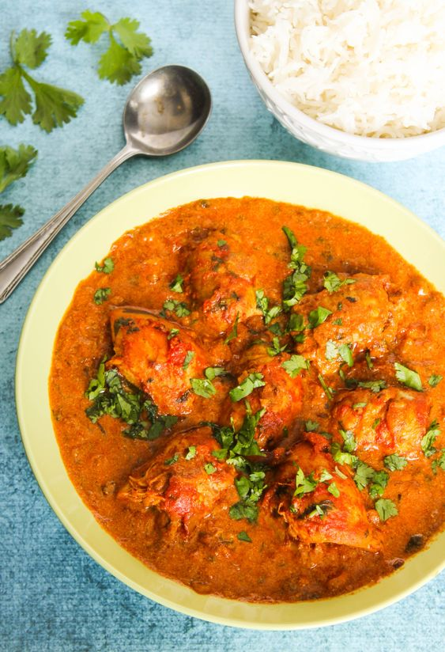

Kerala Chicken Curry

Description
This is a fantastic main dish for a South Indian meal, which should always be served with several dishes
Ingredients
- 2 tablespoon olive oil
- 1 teaspoon black mustard seeds
- 1 teaspoon whole cumin seeds
- 1 red onion, thinly sliced
- 1 tablespoon minced fresh ginger root
- 8 fresh curry leaves (Optional)
- 1 (15 ounce) can diced tomatoes
- 3 teaspoons ground coriander
- 2 teaspoons red chili powder
- 1 teaspoon ground turmeric
- 1 cinnamon stick
- 1 1/2 pounds chicken breasts, cut into large chunks
- water to cover
- 1 teaspoon salt
Steps
-
Heat olive oil in a large skillet with a lid over medium heat until hot but not smoking. Drop in mustard
seeds snad cumin seeds, cover skillet, and wait until the mustard seeds have all popped. Add onion, ginger,
and curry leaves. Saute over medium heat for about 5 minutes. Add tomatoes, coriander, red chili powder,
turmeric, and cinammon stick; stir well.
-
Add chicken and enough water to barely cover the chicken. Bring to a boil, cover, and simmer over medium or
medium-low heat for about 45 minutes, checking every 10 minutes to mate sure there is enough moisture in the
skillet to keep the chicken from burning. Add more water if necessary. When the chicken is tender, season
with salt and serve.